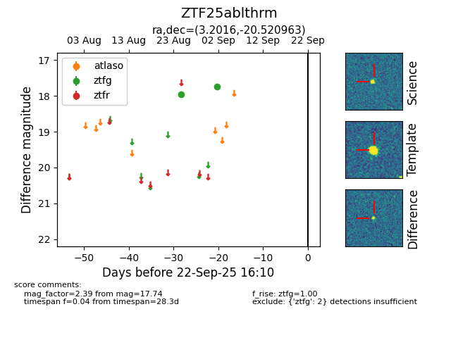

FINK: ZTF25ablthrm
Lasair: ZTF25ablthrm
ALeRCE: ZTF25ablthrm
ZTF25ablthrm (ztf,fink)
equatorial (ra, dec) = (3.2016,-20.52096)
galactic (l, b) = (67.6852,-78.97527)

last ztfg=17.74
2 ztfg detections